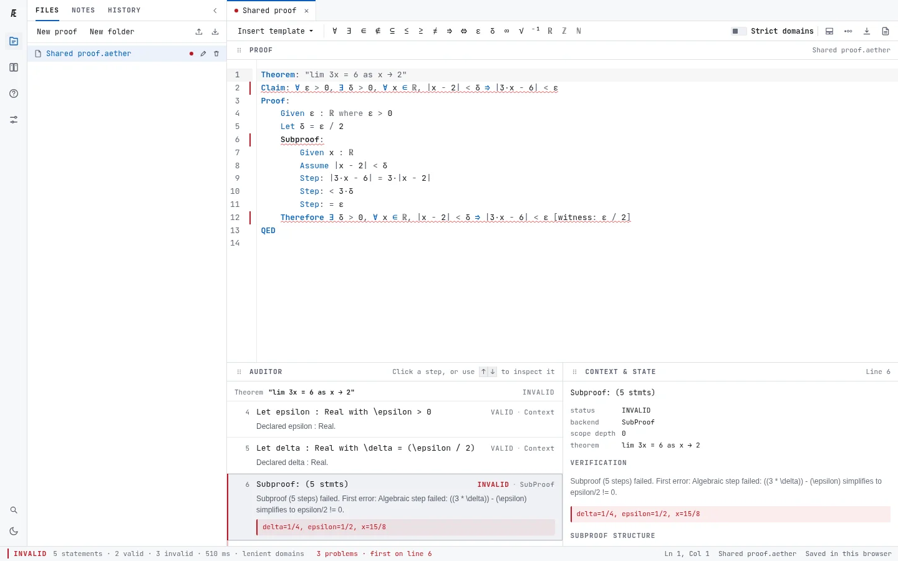
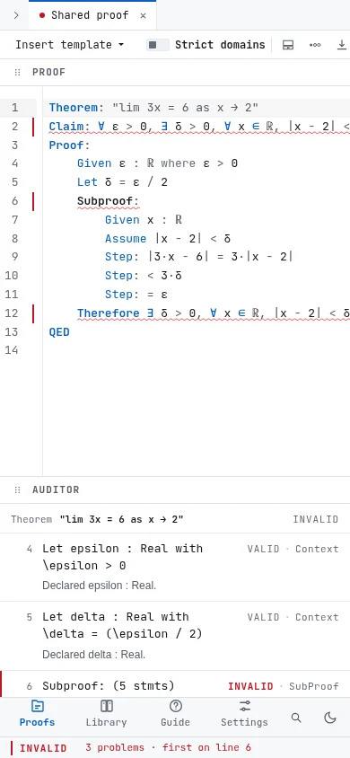

Line {{ hero_fail_line }} fails: δ = ε / 2 is too big.
-
{{ hero_audit }}
Check proofs the way your notes write them.
{{ name }} checks every line, and when one fails it shows which, why, and a counterexample.
Free. Runs in your browser, or offline on your desktop. No account needed.
Write what your lecturer writes.
Type the symbol, or its name: forall, \epsilon, <=. Both read the same, and the app's symbol strip inserts any of these with a click.
-
{{ symbol_grid }}
It also says what you assumed.
Cancelling (x − 1) is right, unless x = 1. The checker points out the assumption the proof never states; add Assume x != 1 and the warning goes.
-
{{ domain_audit }}
- Algebra and logic, both. Calculations are checked by SymPy; inequalities, quantifiers and deductions by Z3.
- Strict when you want it. Turn on strict domains and an unstated assumption fails the proof instead of warning.
- What is known, at every line. Click any step to see the variables in scope, the hypotheses and the facts derived so far.
- Honest about its limits. When the solver cannot decide, it says so. What it can check


Your module, as proofs you can check.
Course packs transcribe a module's results into {{ name }}, numbered as in the notes, with deliberate mistakes to find. Install them from the Library, use a theorem in your own proof, or make a pack of your own.
| Pack | Entries | Traps | Chapters |
|---|---|---|---|
| MTH2008 {{ mth2008_title }} | {{ mth2008_entries }} | {{ mth2008_traps }} | {{ mth2008_chapters }} |
| MTH2010 {{ mth2010_title }} | {{ mth2010_entries }} | {{ mth2010_traps }} | {{ mth2010_chapters }} |
| Notation {{ notation_title }} | {{ notation_entries }} | {{ notation_traps }} | {{ notation_chapters }} |
More are published to the public pack registry, where every entry is re-checked before it is listed. Search it from the Library.
For lecturers and departments.
{{ name }} is a study tool, not a grader: it explains and points, and never scores anyone.
- Publish a module
- Put your results and exercises in a pack and open a pull request. The registry checks every entry with the engine students use before anyone can install it. How to publish
- Traps to find
- A pack can carry deliberate mistakes. Students open one as an exercise and look for the failing line before the checker shows it.
- Your own copy
- Host it yourself: one
site.jsonsets the name, the accent colour, the packs a first visit installs and your own registry. Self-hosting - What it can and cannot check
- The capability matrix lists every construction the checker supports and every known gap, each one verified by a test. Read it
Before Lean, not instead of it.
Proof assistants such as Lean check everything, once you have learned type theory and their syntax. A computer algebra system checks one calculation at a time. {{ name }} sits between them: the whole argument, line by line, in the notation of your notes, so you learn what a checked proof feels like before you formalise one.
Use it your way.
-
In your browser
Nothing to install. The checker runs on your computer, inside the page, and your work stays there.
Open {{ name }} -
On your desktop
Linux, Windows and macOS. Works offline from the first launch.
Download -
From the command line
Check
Install the CLI.aetherfiles from a terminal or a script. -
On your own server
A folder of static files that any web server can host, branded with one config file.
Self-host
Bring tonight's problem sheet.
Type the first line of your proof and see how far the argument holds.
Open {{ name }}